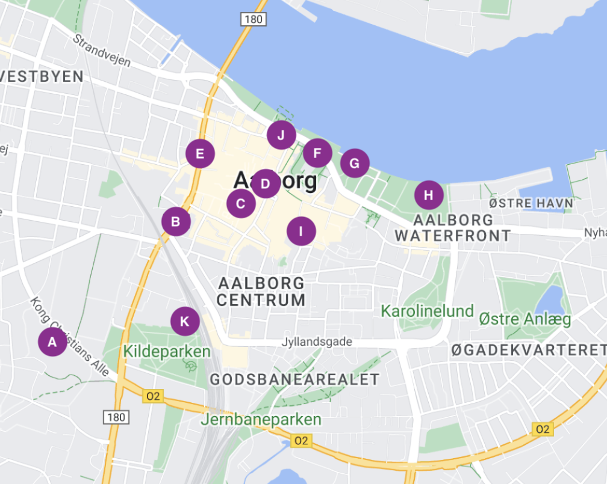
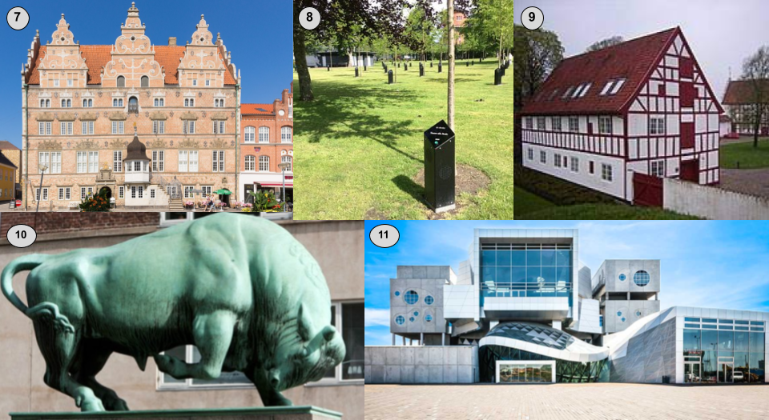
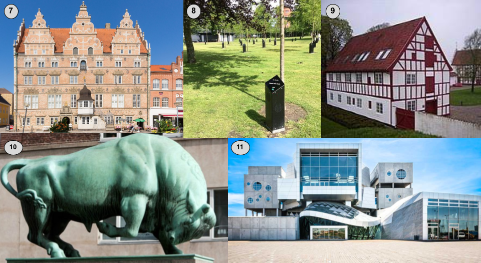
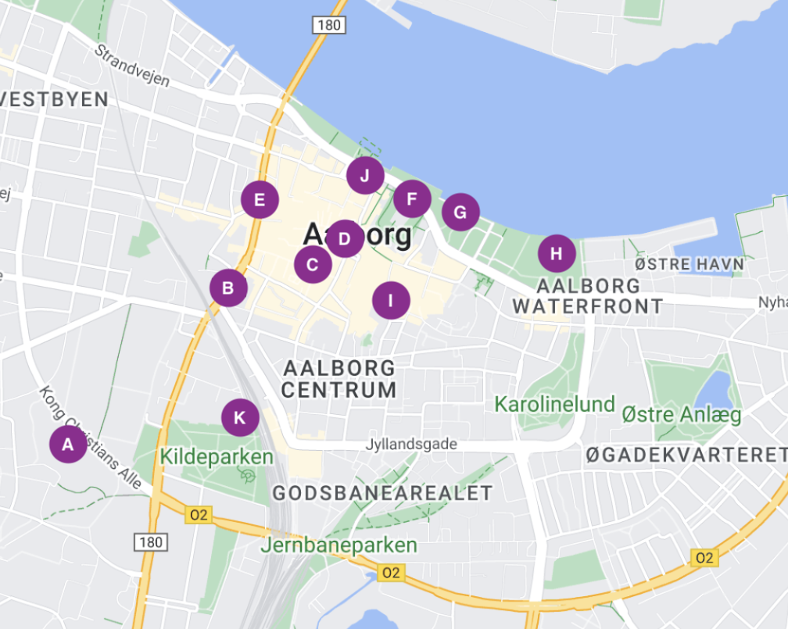
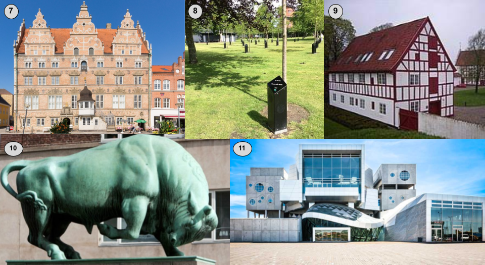

Puzzle

 

This puzzle was inspired by mapping coordinate puzzles and Aalborg. Each alphabetical point on the map below (e.g., point A) represents a classic or historical landmark in Aalborg (sorry no hidden gems or else this would take you 3,000 hours I think). Match the alphabetical point to the numerical pictures below to find the first location at: N 57.0[A+C][E-J][H-F+D] E 9.9[K-B][G-A-I][C+C] You can check your solution here Good Luck!

